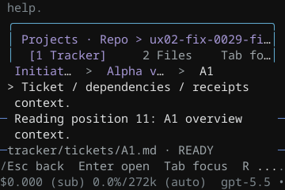
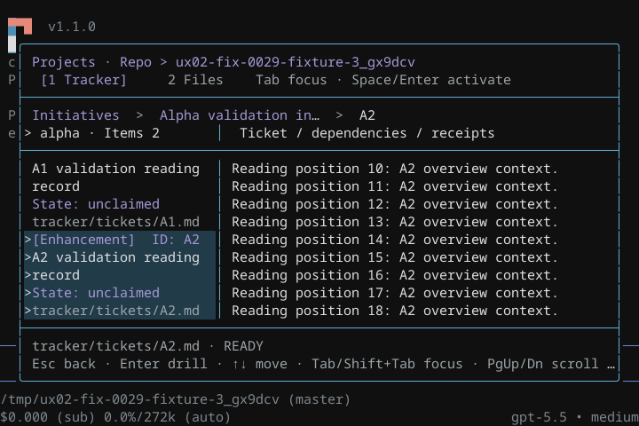
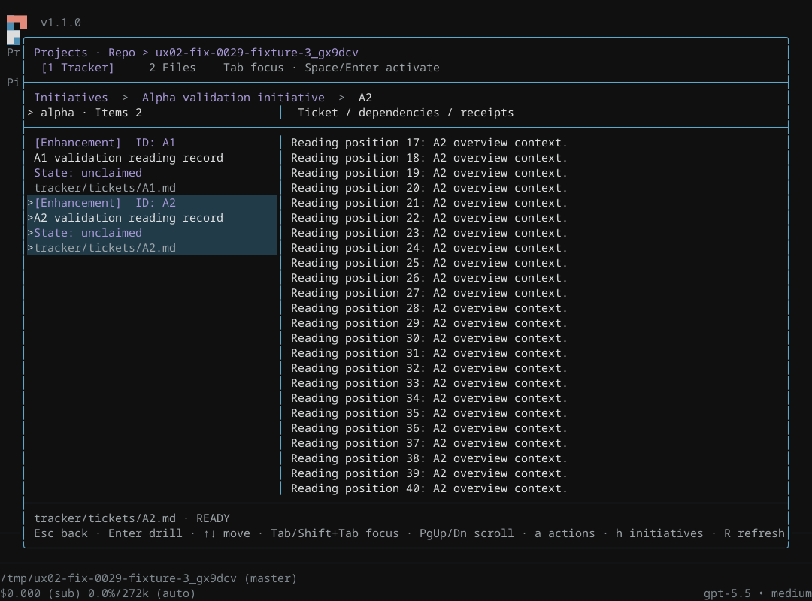
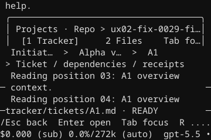
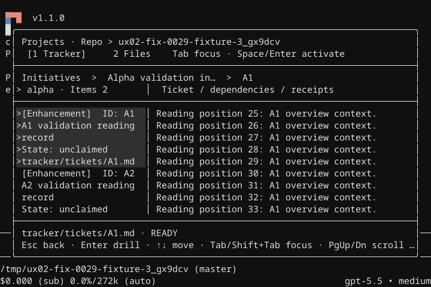
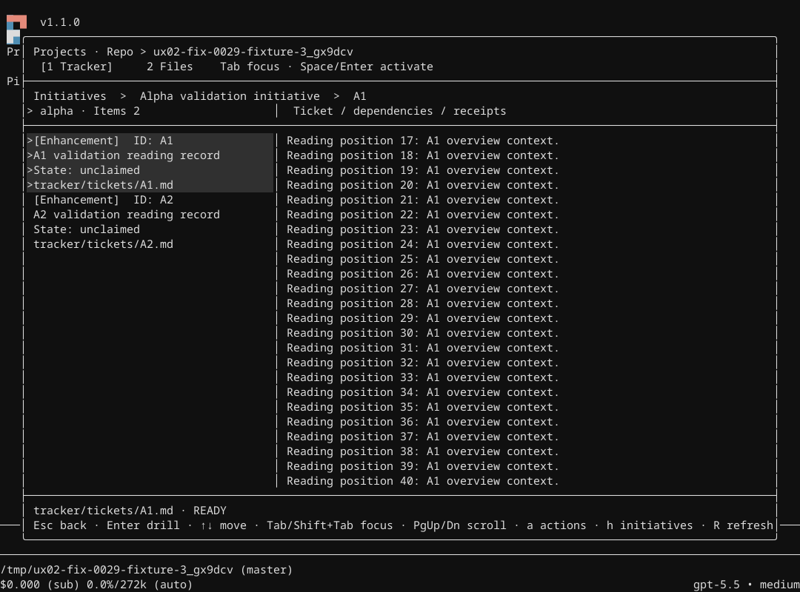
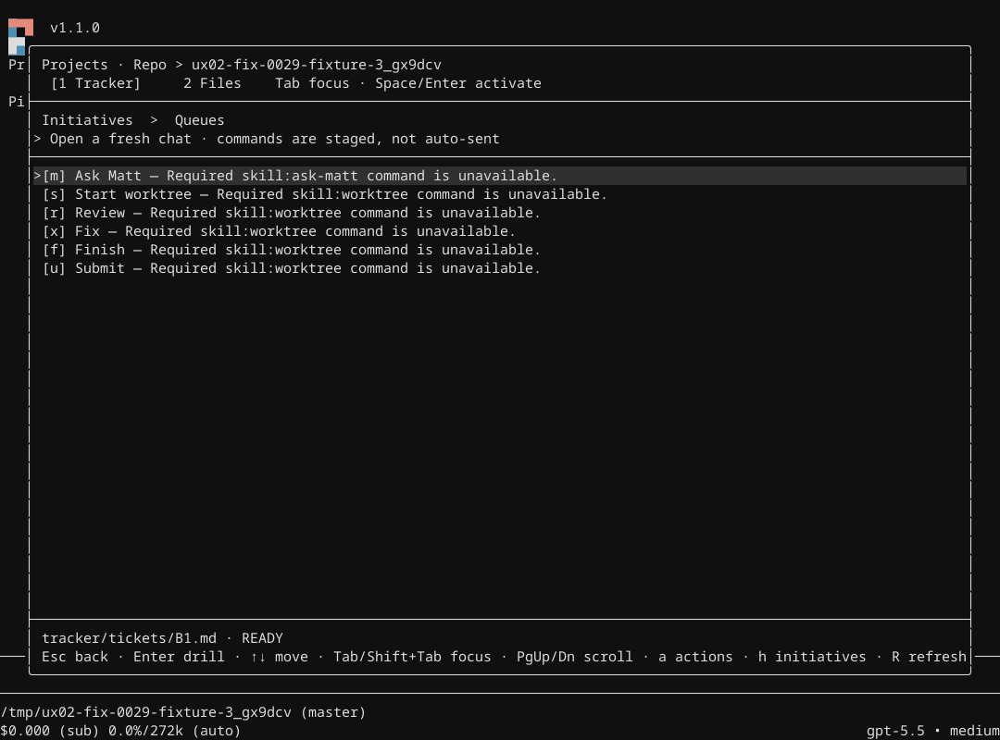
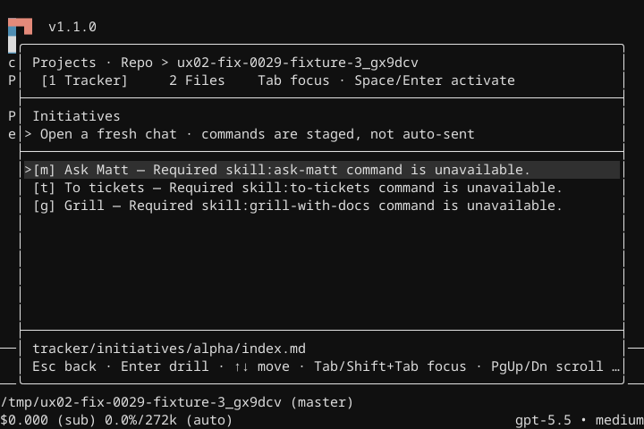

Fix-0029: compact return context and inactive remembered-ticket deletion. Actual Pi v1.1.0, disposable tracker, no model or service requests.
At 40×12, Esc, focused ticket ancestor, and clicked ticket ancestor returned identical saved overview lines. The six views below cover colour and monochrome at every required size. Wide views retain the overview beside the list.






Read A2 in alpha, return home, select B1 in All, and open actions. Delete only A2 and update alpha membership. After a two-second watcher wait, the menu remains identical. Returning to home confirms alpha Items: 1, so the watcher processed the deletion. All eight queue/home cases passed at 80×24 and 120×40 in colour and monochrome. B1 and alpha canonical references remained correct.


136 tests passed, 0 failed, 1871 expectations across all 11 affected files. Scoped TypeScript exited 0. Active child reparenting closed its menu and selected canonical A1. Removing an unrelated initiative left B1 queue lines unchanged. Files retained overview state and inserted an unsent path.
Two initial suite runs failed in the new mouse test locator: a compact label was truncated, then an ANSI byte offset was used as a terminal column. The final locator uses visible terminal width. Both failures remain in the evidence. Earlier immediate runtime snapshots are exploratory; final deletion captures use settled keys, wall-clock watcher waits, and changed membership counts.
No new independent review ran. No merge, rebase, push, finish, tracker mutation, helper session, or real agent action dispatch ran. Runtime skills were disabled; canonical dispatched targets and workflow safeguards are covered by the complete-modal suite. A fresh independent review requires explicit cycle-limit extension.
PNGs reconstruct native termscope text and RGB spans at fixed cells. Background-only spans use the captured selection colour. They are not untouched native screenshots. Native JSON and span captures remain primary evidence. The greyscale theme applies to the modal; old Pi startup text outside the overlay can retain colour.
All three Pi processes exited 0. The disposable fixture, temporary compiler config, monochrome theme, mouse probe, and four ignored dependency links were removed. The pre-existing external package cache remains. Source status is clean. Cleanup record.